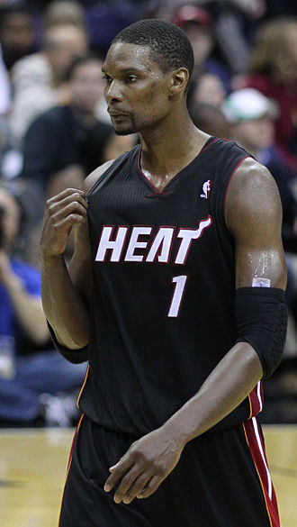

ANTHONY DAVIS

Christopher Wesson Bosh is an American former professional basketball player.
A Texas Mr. Basketball in high school, he played one season of college basketball for Georgia Tech before declaring for the 2003 NBA draft. Bosh was selected fourth overall by the Toronto Raptors.
Born: 24 March 1984 (age 37 years), Dallas, Texas, United States
Height: 2.11 m
Spouse: Adrienne Williams Bosh (m. 2011)
Salary: 2.22 crores USD (2016)
Children: Trinity Bosh, Phoenix Avery Bosh, Dylan Skye Bosh, Jackson Bosh, Lennox Noel Bosh
Education: Lincoln High School & Humanities/Communications Magnet, Georgia Institute of Technology
Position: Power forward, Center, Forward-center